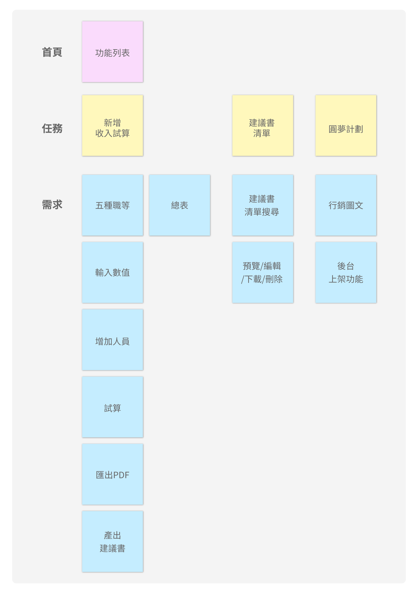

介面設計
創業建議書
專案角色
UI 設計師
平台
Web（ 含 RWD 設計）
使用工具
Adobe XD、illustrator
成品展示
專案背景
創業建議書主要是幫助已加入業務同仁各職級晉升收入試算，業務主管面對面輔導，定期晉升目標盤點追蹤使用。
需求內容
與PM進行需求訪談，初步瞭解此專案的系統介面、流程、相關專有名詞後，此專案我們歸納總結出三個主要功能，設計俐落直覺的表單填寫及試算等流程，提升同仁們的工作效率。
視覺原則
由於創業建議書是以「工作操作系統」為原則，視覺設計在此次專案扮演「幫助使用者快速設定業績目標」的角色，以富邦藍綠色為基底帶入品牌意象，塑造乾淨清爽的空間氛圍。